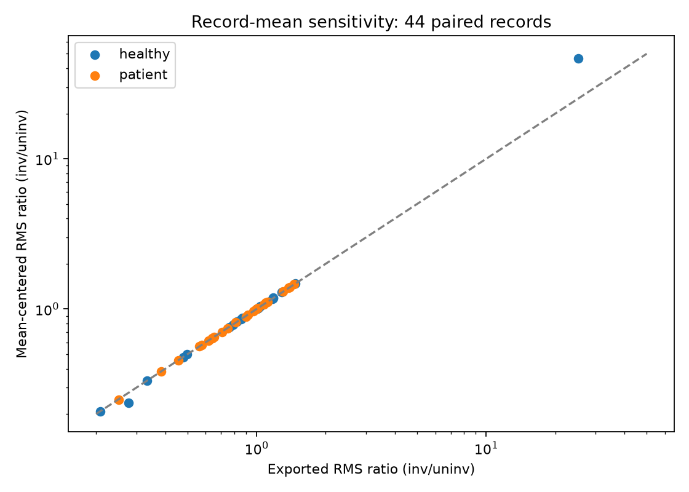
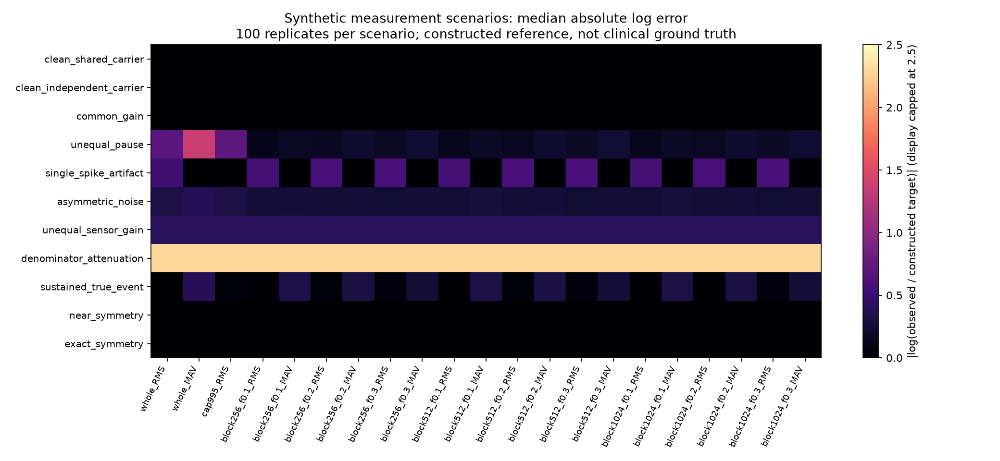
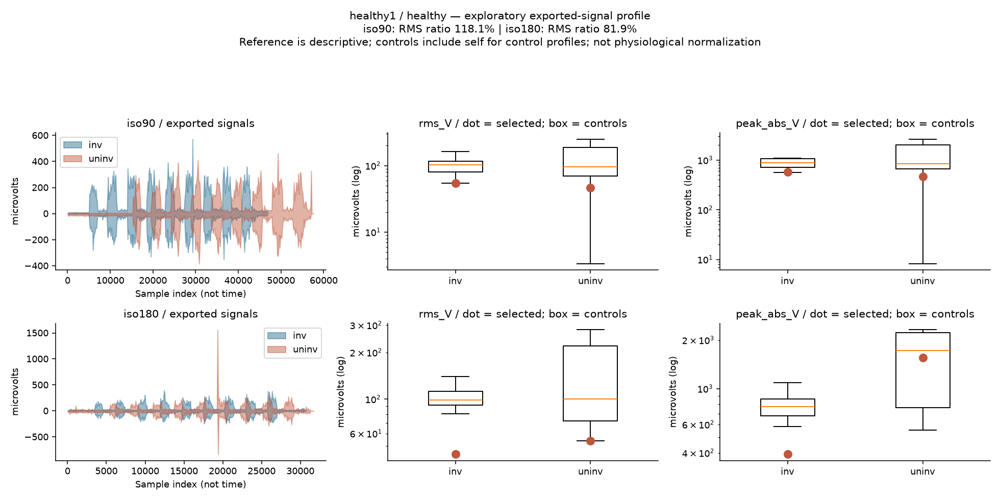
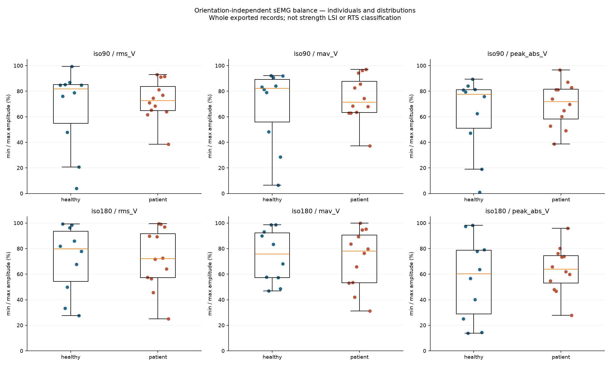
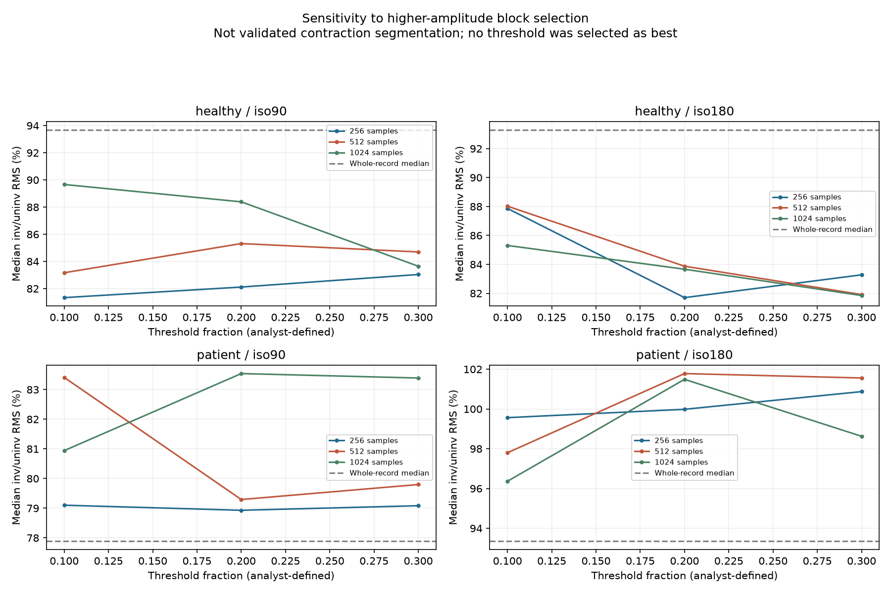

sEMG limb symmetry after ACL reconstruction: robustness analysis
22 participantes · 88 registros sEMG · baseline exploratorio conservado
Current robustness review
Within-person sensitivity is the primary interpretation. Absolute between-cohort voltages are supplemental acquisition-dependent descriptions. Clinical validity and scientific priority are unestablished.
Methods · Results · Limitations · Portfolio case


Amplitud de registros exportados, sin normalización MVC. Los resultados describen estas señales; no representan fuerza ni preparación para volver al deporte.
Perfil individual
Señales por índice de muestra. Referencia de controles descriptiva; en perfiles de controles incluye al propio participante. Sin sincronización de contracciones entre miembros.

Comparación con la publicación
Cociente RMS inv/uninv ×100. Registro completo; procesamiento/ciclos publicados no reproducidos exactamente. SD = desviación estándar. El registro corto healthy8 afecta especialmente la media de controles iso90.
| Cohorte | Condición | Nuestra media (%) | Nuestra SD | Media publicada (%) |
|---|
| patient | iso90 | 86.71 | 31.23 | 90.20 |
| patient | iso180 | 85.45 | 36.02 | 87.50 |
| healthy | iso90 | 328.56 | 771.13 | 96.80 |
| healthy | iso180 | 86.13 | 39.28 | 96.10 |
Tabla completa · Artículo
Distribución individual de balance sEMG

Sensibilidad a la selección de bloques
